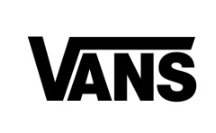

Wat ik leuk vind
Deze pagina bevat mijn geliked zaken.
Favoriete muziek
-
Bad Bunny
Ik vind dit zalig muziek omdat het mij doet herinneren aan mijn erasmus tijd in Valencia.
Dit is zijn Instagram profiel als je hem zou willen volgen

Bad Bunny -
Jack Harlow
Soms wil ik ook rustige muziek en dan is dit één van mij go to artiesten. Je kan zijn Insta bekijken door op onderstaande foto te drukken.

Jack Harlow - Uiteraard heb ik ook muziek nodig voor in de gym en dan gebruik ik deze playlist van Spotify.
Favoriete kledij
- Carhartt
Carhartt Op deze link kan je kledij kopen van Carhartt
- Vans
Ik vind dit het beste merk voor degelijke schoenen, het is ook handig voor de zool uit te halen wanneer je custom pads hebt zoals ik.
 Vans
Favoriete eten
Hieronder ga ik een lijstje meegeven met eten dat altijd in mijn maag kan.